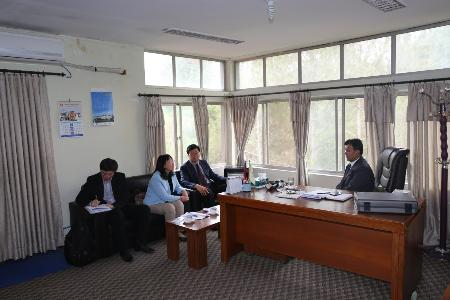
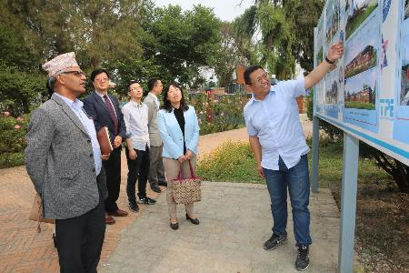
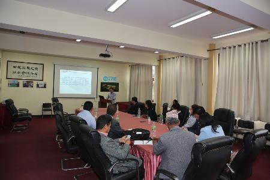

2018年4月26日-28日，中科院条件保障与财务局高军副局长等一行6人访问中国科学院加德满都科教中心，针对中心建设和财务现状等问题进行调研。
高军副局长等一行与特里布文大学常务校长尔塔•拉杰•卡尼亚（Tirth Raj Khaniya）教授举行座谈会。卡尼亚校长对高军副局长一行表示热忱欢迎，并代表特里布文大学表示将一如既往地支持和帮助加德满都中心建设发展，殷切期望中心能成为培育尼泊尔科学家的摇篮。高军副局长对卡尼亚校长及特里布文大学对“一带一路”科技组织联盟的大力支持表示感谢，感谢卡尼亚校长及特里布文大学对中心的强力支持，并衷心祝愿双方携手共进、合作共赢。
会后，高军副局长一行视察了加德满都科教中心基建场地与设施，详细了解了中心总体建设的进展情况。在TPE加德满都中心会议室，青藏所纪委书记马耀明研究员对高军副局长一行表示热烈欢迎，并衷心感谢中国科学院对加德满都中心工作的大力支持。中心执行主任汪涛研究员介绍了中心自建设以来取得的重要科研进展、基本建设和海外研究生培养情况、明确了本年度工作重心、展望了今后五年中心发展的任务与目标。高军副局长充分肯定了中心近几年来在科研、基本建设和教育方面取得的突出成绩，对长期坚守在海外中心的工作人员表示深切慰问；提出中心应继续以服务科研教育为中心，将财务工作落到实处，把每一笔经费用好，争取早日成为中尼及全球科学家开展喜马拉雅研究工作极具影响力的国际科研合作平台，以积极推进国家科技外交战略。

与特里布文大学校长卡尼亚教授座谈会现场

刘晓波副主任介绍基建状况

执行主任汪涛介绍中心状况